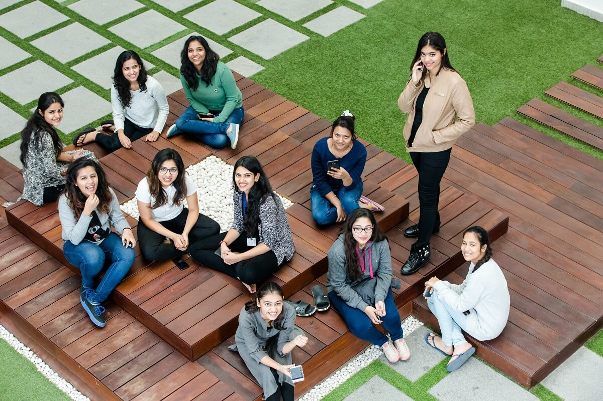

Makar Sankranti: A Festival of Warmth, Sweetness, and New Beginnings
 As the winter winds mellow and the sun's journey shifts, India welcomes Makar Sankranti, a festival that symbolizes the transition of seasons, gratitude for the harvest, and the beginning of brighter days. Celebrated nationwide with unique traditions, Makar Sankranti carries a universal message of harmony, unity, and renewal.One of the most endearing customs associated with Makar Sankranti is the preparation and sharing of til-gul laddoos, made from sesame seeds (til) and jaggery (gul). This tradition holds deep cultural and emotional value. The Marathi saying, "Til-gul ghya, ani goad-goad bola" translates to “Take these sweets and speak sweetly,” encouraging kindness, positivity, and reconciliation.
As the winter winds mellow and the sun's journey shifts, India welcomes Makar Sankranti, a festival that symbolizes the transition of seasons, gratitude for the harvest, and the beginning of brighter days. Celebrated nationwide with unique traditions, Makar Sankranti carries a universal message of harmony, unity, and renewal.One of the most endearing customs associated with Makar Sankranti is the preparation and sharing of til-gul laddoos, made from sesame seeds (til) and jaggery (gul). This tradition holds deep cultural and emotional value. The Marathi saying, "Til-gul ghya, ani goad-goad bola" translates to “Take these sweets and speak sweetly,” encouraging kindness, positivity, and reconciliation.
Hack Your Way to Innovation: Join AI Innovate 2025 at Bennett University!
Are you ready to dive into the future of artificial intelligence and innovation? Bennett University, in collaboration with Microsoft, is thrilled to announce AI Innovate 2025, a two-day hackathon designed to challenge your creativity, ignite your problem-solving skills, and give you a platform to showcase your talent. AI Innovate 2025 is not just a hackathon; it's an opportunity to be part of a transformative experience. Whether you're an aspiring innovator, a tech enthusiast, or someone looking to push the boundaries of what's possible, this event offers something for everyone. Mark your calendar and be sure to register for this exciting event.
Inspiring Change: Seema Srivastava's Passion for the Environment
 Hey Bennett students! Did you know that one of our own faculty members, Seema Srivastava, is not only an inspiring educator but also a dedicated environmentalist? Her unwavering commitment to protecting Mother Earth and her love for all living beings make her a role model for sustainable living. Seema Srivastava’s connection with the environment runs deep. She believes in taking actionable steps to create a better world for future generations. Her work extends beyond teaching, as she actively participates in initiatives to safeguard nature and raise awareness about sustainability. One of her most heartfelt missions is her work with animals. She organizes vaccination drives for stray animals, ensuring their health and safety while spreading awareness about the importance of animal welfare. Her compassion for the planet and its creatures reminds us that even small acts of kindness can make a significant impact.
Sign up for our Newsletter
"Celebrating Our College's Vibrance: Stories That Inspire, Updates That Matter, and News That Keeps You Connected."